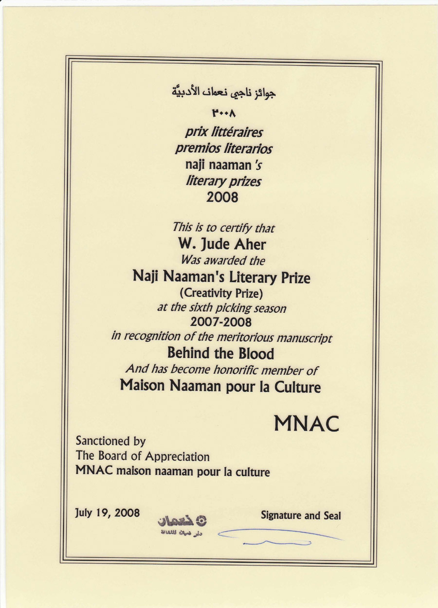
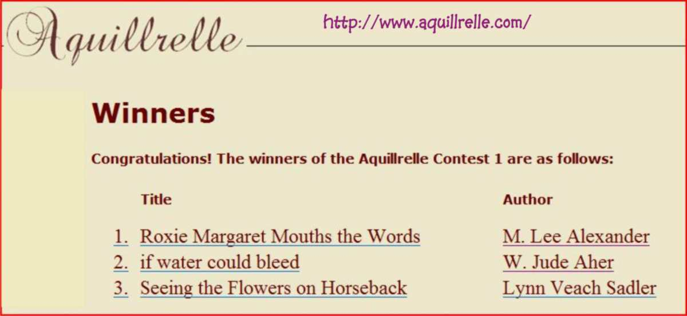
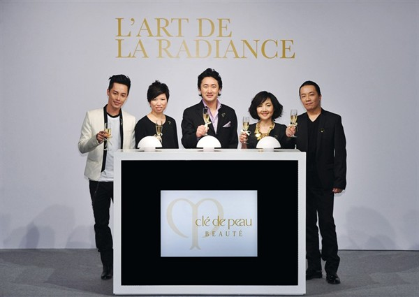
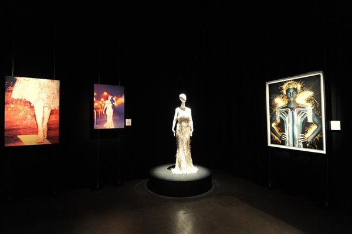
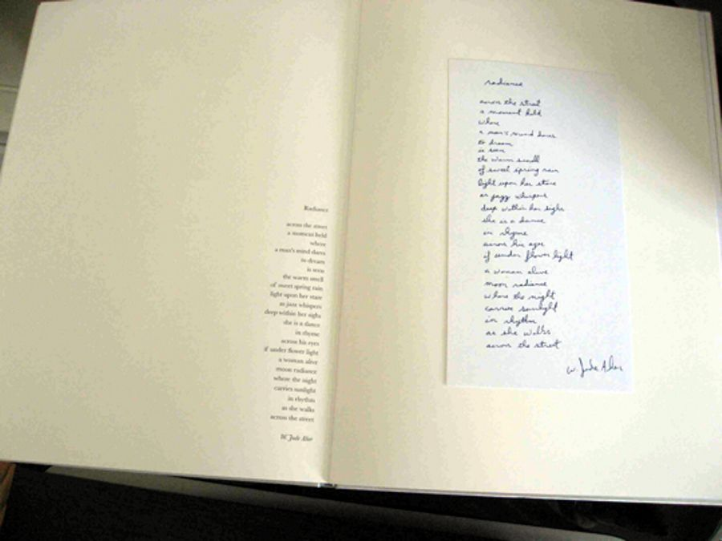

Cle de Peau Beaute L'Art de Radiance Exhibition


With radiance as a prompt, Goh transformed the Quarry Bay space into a tantalizing mélange of art, photography and fashion, as he said in an interview with BACCARAT magazine, "I don't want beauty to be portrayed in a superficial way. Beauty is not about putting expensive cream on your face. Beauty goes beyond skin deep, it radiates from the inside”.
Collaborators ranged from photographers Chen Man and Laurent Segretier to Chinese contemporary artist Li Wei and American poet W. Jude Aher.

http://www.eternalhk.com.hk/CPB/30th_Anniversary/webpage_0423/eBook/style.html#